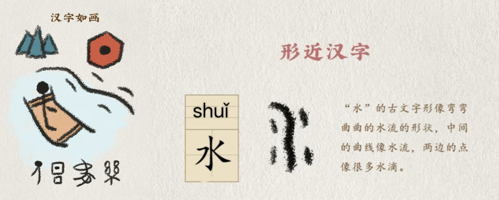
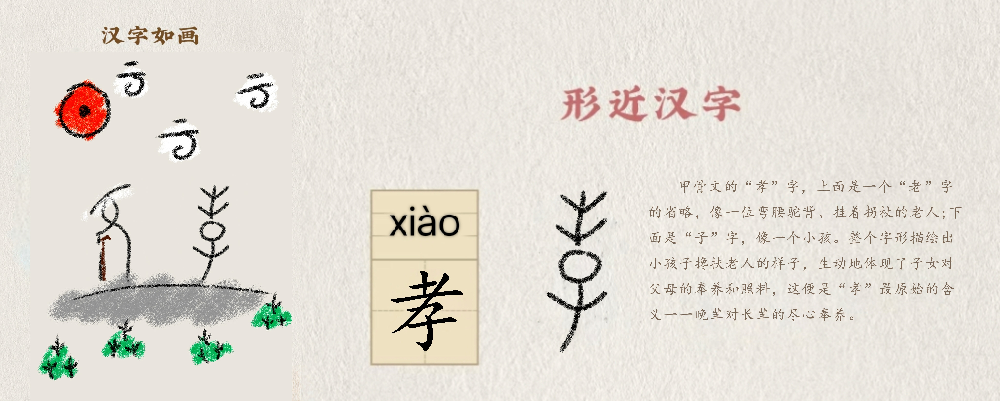

首页
汉字的由来
汉字成长史
造字小秘密
汉字里的文化
趣味汉字乐园
活字印刷
汉字小名家
传承汉字文化
首页
汉字的由来
汉字成长史
造字小秘密
汉字里的文化
趣味汉字乐园
活字印刷
汉字小名家
传承汉字文化
汉字是中华优秀传统文化的根，一撇一捺都藏着大智慧。 今天就让我们走进汉字，读懂汉字里藏着的文化密码，感受老祖宗的智慧吧！

咱们中国的汉字，最早就是从描摹大自然开始的，很多汉字都是「画」出来的哦！ 比如「日」字，像一轮圆圆的太阳；「月」字，像弯弯的月牙；「山」字，像连绵起伏的山峰； 「水」字，像弯弯的流水波纹。还有「云、雨、风、田、禾」这些字，都是古人照着大自然里的样子一点点简化而来的。 古人亲近自然、观察自然，把天地万物的模样融进汉字里，让我们看到这些字，就能立刻想到对应的自然景象， 这就是汉字最质朴的美，也是古人与自然和谐相处的美好心意。

汉字也是古人生活的「记录本」，很多常用汉字，都藏着古人的日常烟火气，记录着古人的衣食住行。 比如「家」字，宝盖头像房屋，下面的「豕」代表小猪，古人家里养猪就是安居乐业，有房有猪就是温暖的家； 「食」字像盛满食物的器皿，一看就和吃饭有关；「衣」字像一件展开的衣服，描摹出衣服的领口和衣袖； 「行」字像十字路口，代表着出行赶路；还有「田、耕、炊、休、安」这些字， 分别记录了耕种、做饭、休息、安稳的生活状态。这些汉字把古人的生活场景定格下来，历经千年， 我们今天用到这些字，依然能读懂其中的生活暖意，这就是汉字传承的温度。

最珍贵的是，咱们的汉字里，还藏着中华民族代代相传的美好品德，一撇一捺都刻着做人的道理， 这也是汉字最深沉的文化内涵。「仁」字，左边是人，右边是二，一种常见的说法是：它寓意人与人之间要相互关爱、彼此包容； 「孝」字，上面是「老」的上半部分，下面是「子」，代表子女搀扶着老人，是孝顺长辈的美好品德； 「信」字，左边是人，右边是言，告诉我们做人要言行一致、诚实守信； 「礼」字有礼节、谦让之意，教会我们待人谦和有礼；还有「善、诚、敬、和」这些字，每一个都饱含着美好的期许。 汉字不仅是交流的工具，更像一位老师，把中华传统美德融进字形字义里， 让美德通过汉字代代相传，刻进每个中国人的骨子里。
资料来源：字义与文化解读参考《说文解字》、汉典（zdic.net）及公开传统文化资料整理，部分通俗解读为便于理解的说法。